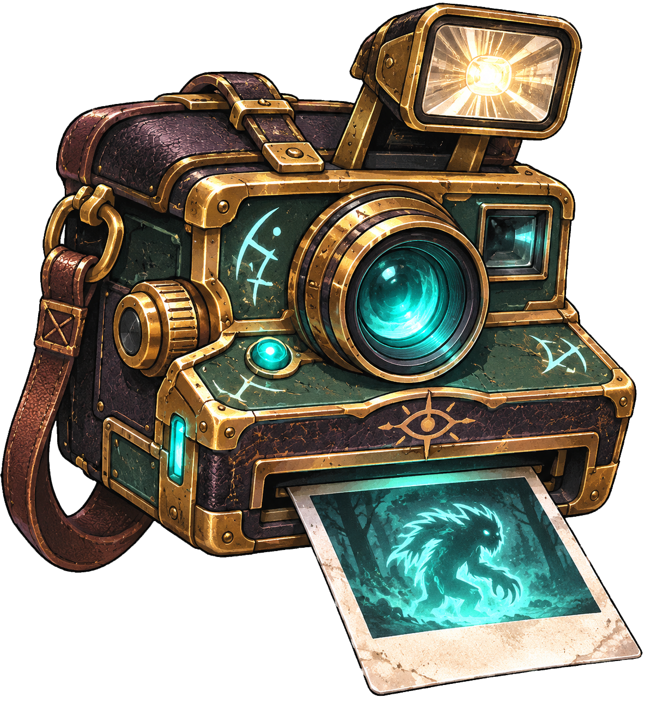

CHAPTER III · ESSENTIAL EQUIPMENT
The Crypto-Camera
Ordinary cameras capture light. The Crypto-Camera captures something far stranger: the living signature of a Cryptomon.

Society-issued instant capture apparatus · illustrated field reference
THE CRYPTID COMPENDIUM · Crypto-Camera
CAPTURE AND SUMMONING PROTOCOL
A Creature in a Photograph
- Locate. Find a Cryptomon in its natural habitat. Observe its behavior and approach carefully.
- Focus. Frame the creature through the Crypto-Camera's specialized lens. A clear, well-timed photograph is essential.
- Capture. When the shutter fires successfully, the Cryptomon is drawn into the developing instant photograph, leaving its surroundings behind.
- Contain. The resulting Polaroid becomes its temporary home. The Cryptomon remains safely held within the picture until called upon.
- Summon. During battle, activate the captured photograph to release the Cryptomon into the field. Afterward, it returns to its picture.
A Living Archive
Every photograph is both evidence and a bond. The image identifies the captured creature, but it also serves as the key to summoning it again.
Research warning: the precise mechanism of photographic containment remains unexplained.
FIELD EDITION · VOLUME I